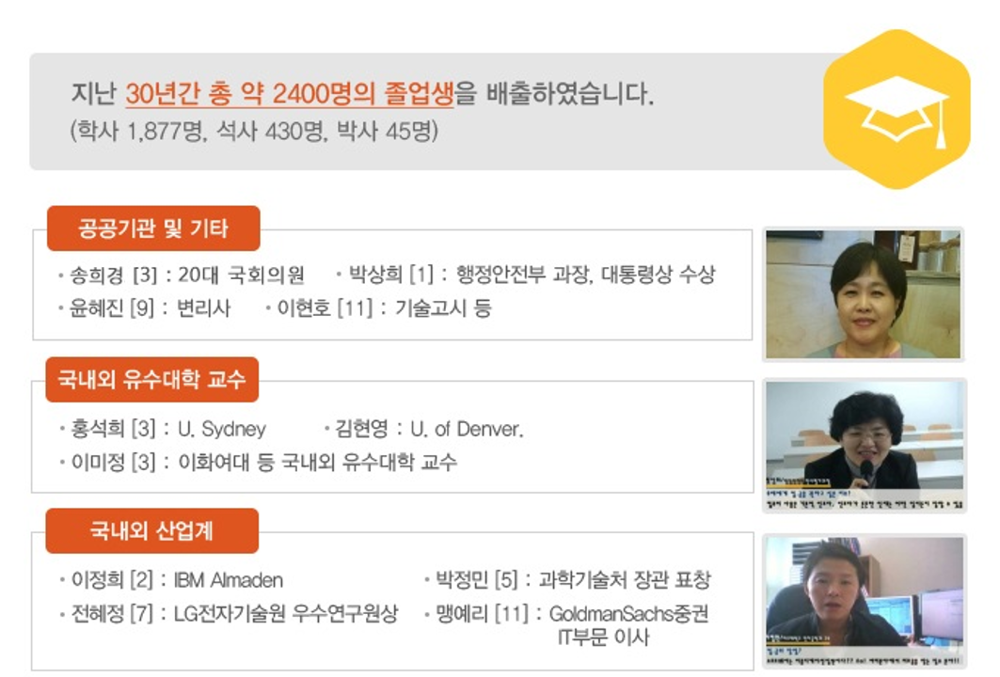

재학생&졸업생
재학생
재학생 현황
학부: 컴퓨터공학과 364명
대학원: 석ㆍ박사 과정 25명
전공 대표
노수진 윤하영
컴퓨터공학과 이메일 ewha.cse.2022@gmail.com
컴퓨터공학과 인스타그램 @ ewha.cse2022
졸업생
지난 30년간 총 약 2400명의 졸업생을 배출하였습니다.
(학사 1,877명, 석사 430명, 박사 45명)
졸업생의 대표적인 분들 소개
